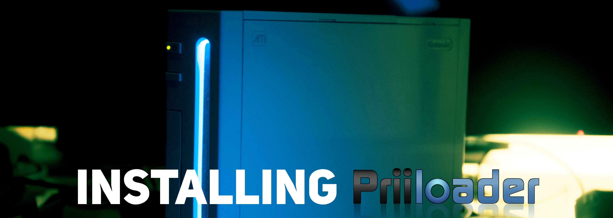

Instalar Priiloader
Si necesitas ayuda para seguir los pasos de esta guía, por favor solicita ayuda en nuestro servidor de Discord (recomendado) o envíanos un correo electrónico a [email protected].
Priiloader proporciona un nivel adicional de protección contra bricks a tu consola Wii. Se carga antes del menú de Wii (de ahí el nombre). La herramienta también te permite activar hacks para el menú de Wii, así como lanzar el Canal Homebrew, BootMii o cualquier homebrew rápidamente.

No instales Priiloader en una vWii (Modo Wii en una Wii U). Si lo haces, tu vWii dejará de funcionar.
Requisitos
- Una tarjeta SD o unidad USB
- Instalador de Priiloader
Instrucciones
Sección I - Descarga/instalación
- Descarga el instalador de Priiloader y extraelo a la raíz de tu tarjeta SD o memoria USB.
Sección II - Instalación
- Inicia el Canal Homebrew en tu Wii.
- Lanza el instalador de Priiloader.
- Presiona el botón + en tu Wiimote o el botón A en un control de GameCube.


Sección III - Configurando Priiloader
- Sostén el botón RESET cuando enciendas tu Wii.
- Si estas usando una Wii mini, conecta un teclado USB y sostén la tecla Escape cuando la enciendas.


- Deberías ver el menú de Priiloader.

- Ve a
System Menu Hacks.
Si estás usando una unidad USB instalar Priiloader, asegúrate de que no tienes una tarjeta SD insertada al mismo tiempo. Esto causará que Priiloader no pueda encontrar el archivo hacks_hash.ini
- Recomendamos que habilite los siguientes trucos:
Region Free EVERYTHING,Block Disc UpdatesyBlock Online Updates.
- Baja hasta el boton
Save Settingsy Presiona el botón A, y presiona B para volver al menú principal de Priiloader. - Baja hasta el botón
Homebrew Channely presione A para ejecutarlo.
Lista de hacks para el menú de Wii
Esto es una Lista de los los hacks que puedes activar con Priiloader.
| Hack | Descripción |
|---|---|
| Block Disc Updates (Bloquear Actualizaciones de Disco) | Quita la pantalla de “Actualización de la Consola Wii” que viene incluida con algunos juegos que te fuerzan a actualizar el sistema para poder jugar. |
| Block Online Updates (Bloquear Actualizaciones En Línea) | Desactiva las actualizaciones en tu Wii. Las actualizaciones fallarán con el error 32007. |
| Auto-Press A at Health Screen (Presionar Automáticamente A en la pantalla de Salud y Seguridad) | Automaticamente presiona el botón A para pasar la pantalla de “Salud y seguridad”. |
| Replace Health Screen with Backmenu (Reemplazar la Pantalla de Salud y Seguridad con el Backmenu) | Cambia la pantalla de “Salud y seguridad” con la animacion que se reproduce cuando vuelves al Menú Wii. |
| Move Disc Channel (Mover Canal Disco) | Permite mover el Canal Disco a cualquier parte del Menú de Wii. Normalmente esta bloqueado en la esquina superior izquierda de la primera página. |
| Parche de Wiimmfi v4 | Automaticamente parchea todos los juegos que ejecutes desde el Canal Disco para poder usarlos con Wiimmfi. |
| 480p graphics fix in system menu (arreglo de gráficos en 480p en el Menú del Sistema) | Arregla un problema menor con el modo 480p en el Menú de Wii. |
| Remove NoCopy Save File Protection (Remover el bloqueo de copiar Archivos Guardados) | Permite copiar algunos archivos de guardado a la tarjeta SD desde Gestión de Datos que normalmente estarían protegidos |
| Region Free EVERYTHING (Liberar de región a TODO) | Deshabilita el bloqueo regional de cualquier titulo de Wii, incluyendo títulos descargados. |
| Region Free GC Games (No VM Patch) (Juegos de GC sin bloqueo regional) | Deshabilita el bloqueo regional para los discos de GameCube. |
| Region Free Wii Games (Juegos de Wii sin bloqueo regional) | Deshabilita el bloqueo regional para los discos de Wii. |
| Region Free Channels (Canales sin bloqueo regional) | Deshabilita el bloqueo regional para los Canalis Instalados. |
| No System Menu Sounds AT ALL (Sin sonidos en el Menú del Sistema POR COMPLETO) | Deshabilita todos los efectos de sonido del Menú de Wii. |
| No System Menu Background Music (Sin música de fondo en el Menú del Sistema) | Deshabilita la música de fondo del Menú de Wii. |
| Re-Enable Bannerbomb v2 (Rehabilita Bannerbomb v2) | Activa el exploit de “Bannerbomb” en la última versión de la Wii. No hay necesidad de hacer esto cuando el Canal Homebrew ya está instalado. |
| OSReport to UsbGecko(slot B) | Envía registros del Menú de Wii a un dispositivo de depuración en la ranura B de tarjetas de memoria. |
| OSReport to UsbGecko(GeckoOS,B) | Envía los registros del Menú de Wii a un dispositivo de depuración en la ranura B de la tarjeta de memoria, si Gecko OS inicia el Menú de Wii. |
| Force Standard Recovery Mode (Forzar el modo de recuperación estándar) | Inicia automáticamente la consola en modo de recuperación. Se utiliza para ejecutar discos de recuperación, lo que permite a los usuarios desbrickear sus Wiis. |
| Remove Diagnostic Disc Check (Eliminar verificación de disco de diagnóstico) | Elimina un chequeo en la consola que verifica si el disco e¡insertado es el “Wii Startup Disc”. |
| Lock System Menu with Black Screen (Bloquea el menú de Wii con una pantalla negra) | Hace que el menú de Wii se quede atascado en una pantalla negra, lo que te impide usarlo. (No habilites esto) |
| No-Delete HAXX,JODI,DVDX,DISC,DISK,RZDx (No borrar HAXX,JODI,DVDX,DISC,DISK,RZDx) | Reactiva de nuevo canales con estas IDs de título, originalmente bloqueados en actualizaciones del sistema, debido a que esos canales contenían exploits. |
| Force Disc Games to run under IOS249 (Forzar los j¿Juegos de Disco para que se ejecuten bajo IOS249) | Hacer que los discos usan cIOS 249 como el IOS del juego. Si bien no puede permitir la reproducción de juegos grabados por sí solo, es necesario para reproducir discos grabados. (Puede darte el Error 002 en un juego original no quemado) |
Continue to the Dos and Don’ts of Wii Modding
These are some guidelines to ensure you don’t brick your Wii.